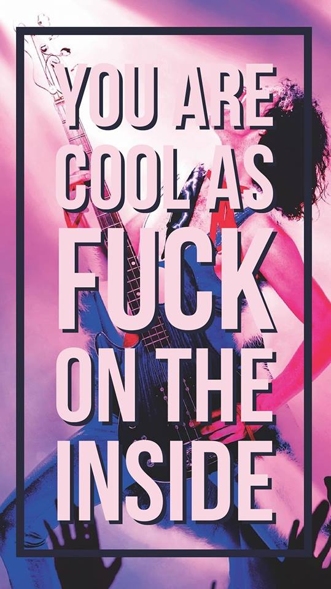

This is a paragraph contained within the P tag. Probably best to space these bad boys out. Wouldn't wanna overload people!
This is the only link you'll ever need. Trust me.
This is an example of two paragraphs right after eachother with no break (br tag) between them
Here is the second paragraph. How nasty...
This is an example of two paragraphs with a break between them
How pretty!
This should be a paragraph of red text. Fucking whoopie! Remember, you define the style you want in the opening tag of an element. Style first, substance second. HTML is very shallow...
A paragraph with a hoverable tooltip. Fucking. Magic.
So the tooltip for this paragraph shows how to use both single and double quotes to both define an attribute and display a piece of quoted text. Never know...
So there are 6 levels of heading tag to use. H1-H6. These will pretty much give a little indent and a bump to font size, but as ya can see from the heading of this section, with a bit of styling, anything can be a heading! Check it out
This is not a heading. Isn't that crazy?
So what you see right there is a HR tag. According to W3 it defines a thematic break in a HTML page. According to me, it's a line across the screen that acts as a visible break. Why they gotta make it sound so fancy? Code is lying down is all. Christ...Also, the colour (NOT COLOR FUCK YOU AMERICA!) used for the heading here was Lavender. LAVENDER. Half chub...
This is a paragraph with correct grammatical rules. There are proper spaces between words, commas where there should be and no crazy chunks of nothing.
This paragraph is kind of a mess. There are spaces everywhere and it's spread across three or 4 lines. Doesn't matter in the browser though. Clever son of a bitch this HTML
Let's talk about the pre tag
Using the pre tag
Will preserve spacing
Between lines and line breaks
Think of all the poems you could write with this badboy!
This paragraph aimed to fix that. I don't think it was all that successful...Something interesting to note though is that you can change the size of the font to a percentage aswell as a pixel size. That's kinda cool!
Chose your alignment!
Choose wisely
The last guy chose...poorly
So here is a list of some formats you can use for making text look different:
This text is bold. It regularly asks the pretty girls out
This text is strong. It regularly lifts logs for the pretty girls
Browsers will display both the same but the tag gives a difference in importance. The same is true for Italic & Emphasised text. Probably not important but might aswell make a note here...
Let's see how many different formats we can squeeze into one small, tight, narrow paragraph
Here is some text. This text is highlighted. Incase you ever want to make a point of showing what you deleted, you can go with use the del tag. For when something really
needs emphasising you can insert it. For the times you want to make your text look stupid you can subscript or superscript it. Yeah, that's not gonna annoy anyone...
A wise man once said Go to bed with itchy bum; wake up with smelly finger
So this is me trying a blockquote from a random website. Three guesses where it came from...
So here is where you could put the quoted text. I suppose you would pick the relevant bit but link to the whole page in the citation.
So here we're gonna try out using the abbreviation attribute. MILF is of course a well known abbreviation. You're welcome future me.
A phone background I found on the internet by Random Dude on Facebook, 2018
Just feels wrongAdding some colour to our paragraphs!
This paragraph is special. It has CSS styling. Everybody hates this paragraph but he looks spiffy AF!
This will take you to the top of the page. There is no way back from this...